flowchart LR
A[Raw FASTQ] --> B[QC + Adapter<br/>fastp/MultiQC]
B --> C[Alignment<br/>bwa-mem2]
C --> D[Add Read Groups]
D --> E[Mark Duplicates<br/>GATK]
E --> F[BQSR]
F --> G[Contamination<br/>Check]
G --> H[Mutect2]
H --> I[Filter<br/>Calls]
I --> J[Annotation<br/>VEP]
Cancer Variant Analysis
Introduction to Cancer Genomics and Variant Detection
Flavio Lombardo
2025-12-12
Learning Objectives
After this session, you will be able to:
- Understand why cancer is fundamentally a genomic disease
- Distinguish between somatic and germline variants
- Identify different types of mutations in cancer
- Understand sequencing approaches for cancer genomics
- Comprehend the bioinformatics workflow for variant detection
- Appreciate the clinical relevance of variant calling
Cancer: A Disease of the Genome
Key characteristics:
- Abnormal cell growth - uncontrolled proliferation
- Invasive potential - ability to spread (metastasis)
- Initiated by acquired genomic mutations affecting cell growth regulators
- Mutations occur stochastically, but rate influenced by environment
- Clonal evolution - natural selection of malignant cells
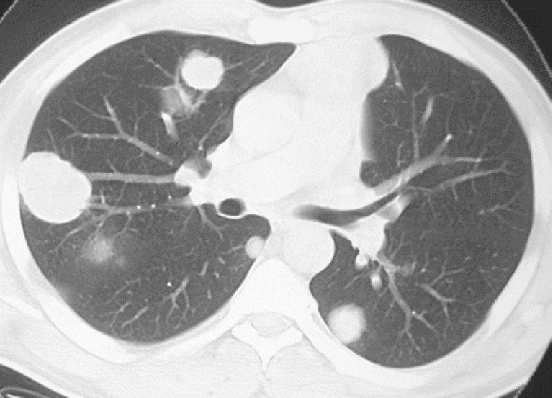
Driver vs Passenger Mutations
Cancer genomes typically harbor 2-8 driver mutations (Vogelstein et al., 2013), though this varies by cancer type. Pediatric cancers often have fewer drivers, while hypermutated adult cancers may have more. Drivers represent a small minority of total mutations.
Hereditary vs Sporadic Cancer
Sporadic (~90-95%)
- Acquired somatic mutations
- Accumulate during lifetime
- Environmental factors contribute
Hereditary (~5-10%)
- Inherited predisposition alleles
- BRCA1/2 (breast, ovarian)
- Lynch syndrome genes (colorectal)
- Still require somatic “second hits”
Clinical Relevance
Hereditary cancer syndromes have implications for family screening, risk reduction, and treatment options (e.g., PARP inhibitors for BRCA carriers).
The Hallmarks of Cancer
8 Core Hallmarks:
| Hallmark | Description |
|---|---|
| Sustaining proliferative signaling | Self-sufficiency in growth signals |
| Evading growth suppressors | Insensitivity to anti-growth signals |
| Resisting cell death | Evading apoptosis |
| Enabling replicative immortality | Limitless replicative potential |
| Inducing angiogenesis | Sustained blood vessel formation |
| Activating invasion & metastasis | Tissue invasion and spread |
| Avoiding immune destruction | Escaping immune surveillance |
| Deregulating cellular energetics | Altered metabolism (Warburg effect) |
2 Enabling Characteristics: Genome instability & mutation; Tumor-promoting inflammation
Reference
Hanahan & Weinberg (2011) “Hallmarks of Cancer: The Next Generation” - Cell
Variant Terminology: Essential Definitions
Variant: A difference in DNA sequence compared to a reference
Mutation: The process of change in DNA
Somatic variant: Occurs only in specific cells/tissues - Not inherited - Arises during lifetime
Germline variant: Present in all cells - Can be passed to offspring - Present from conception
Polymorphism: Traditionally defined as variant >1% frequency in population (though “variant” is now preferred terminology)
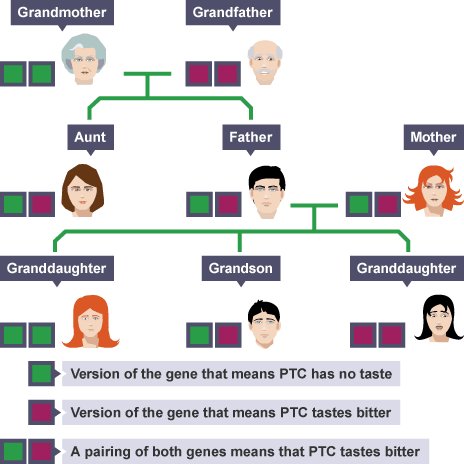
Mutation vs Variant: A Practical Example
The Yellow Flower Example:
- Mutation: The change in DNA that caused petals to turn yellow
- Variant: The resulting DNA difference between yellow and white flowers
This is a somatic mutation - occurring during the plant’s development in one branch, analogous to somatic mutations in cancer.
The CCD4a gene mutation prevents breakdown of carotenoids, leading to yellow pigmentation.
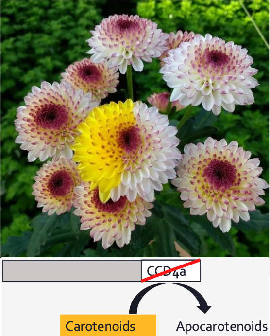
Types of Mutations in Cancer
Small-scale mutations
- SNVs (Single Nucleotide Variants)
- INDELs (Insertions and Deletions)
Structural variations
- Large INDELs (>50bp)
- Translocations - chromosomal rearrangements
- Inversions - reversed DNA segments
- Fusion transcripts - gene fusions from translocations
- CNV (Copy Number Variation) - gains/losses of genomic regions
LOH (Loss of Heterozygosity) is a consequence of CNV or copy-neutral events, not a mutation type itself.
Clinical Relevance
Different mutation types require different detection methods and have distinct clinical implications for treatment selection.
Mutational Signatures: Fingerprints of Mutagenesis
Each mutational process leaves a characteristic pattern:
Signature 1: Aging (C>T at CpG)
Signature 4: Tobacco smoking (C>A)
Signature 7: UV light (C>T at dipyrimidines)
Signature 6: Mismatch repair deficiency
Clinical applications:
- Understanding tumor etiology
- Treatment selection (e.g., PARP inhibitors for HRD)
- Immunotherapy response prediction
Reference
Alexandrov et al. (2020) “The repertoire of mutational signatures in human cancer” - Nature
Sequencing Strategies for Cancer Genomics
Coverage strategies
- Whole Genome Sequencing (WGS)
- Complete genome coverage
- Detects all variant types
- Best for structural variants
- Whole Exome Sequencing (WES) (Bait Capture)
- Protein-coding regions only
- Cost-effective (
WES 100x: 25 M 2 x 100 bp
WGS 30x: 450 M 2 x 100 bp
) - Misses non-coding regions
- Custom panels (Bait Capture, mostly)
- Targeted cancer genes
- Deep coverage
Sequencing technologies
Short reads (2x150bp standard):
- Illumina, MGI, Element, Ultima
- High accuracy, mature pipelines
Long reads:
- PacBio HiFi: >Q30 accuracy
- Oxford Nanopore: Q20+ with R10.4.1
- Superior for SVs and phasing
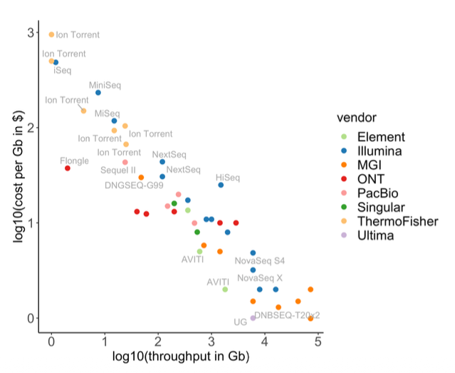
Depth Recommendations
WGS: 60-100x tumor, 30-40x normal WES: 100-200x ctDNA: 10,000-30,000x
Experimental Design: Tumor-Normal Pairs
The challenge: Tumor tissue is heterogeneous - contains: - Tumor cells - Immune infiltrates - Stromal cells - Normal tissue
Solution: Paired samples
- Tumor sample - from the malignancy
- Normal sample - typically blood
For hematological malignancies, use skin biopsy or buccal swab (blood IS the tumor!)
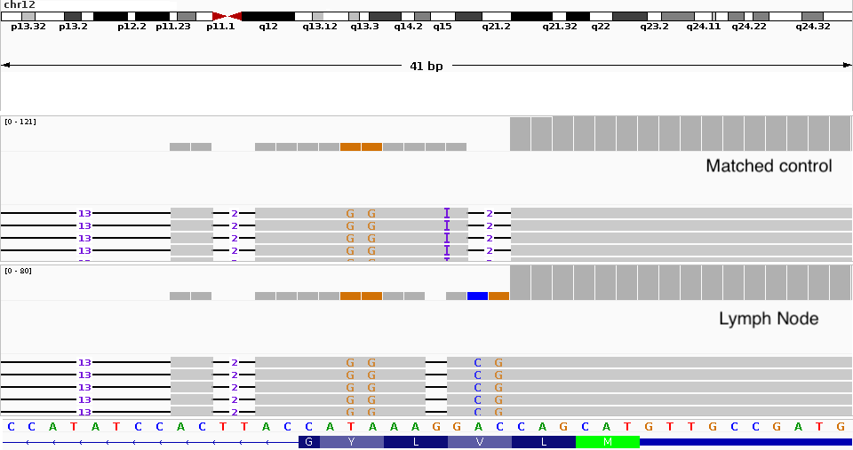
Tumor Purity
Typical tumor purity ranges from 30-80%. Samples below 20-30% purity may have insufficient power for reliable somatic variant detection. Consider pathologist review or microdissection.
Bioinformatics Workflow Overview
Critical Note
Variant annotation is essential but often overlooked! Without functional annotation and clinical database lookup, variants have limited utility.
The SAM/BAM/CRAM File Formats
Purpose: Store sequence alignments
Key points:
- SAM: Text-based (Human readable)
- BAM: Lossless binary compressed SAM
- Indexable (Fast random access)
- CRAM: Ref-based compression
- Lossless or Lossy modes
- ~30-60% smaller than BAM
- Requires access to the reference genome for decoding
Example of header lines from a bam file
@HD VN:1.6 SO:coordinate
@SQ SN:chr6 LN:170805979
@SQ SN:chr17 LN:83257441
@RG ID:HWI-ST466.C1TD1ACXX.normal LB:normal PL:ILLUMINA SM:normal PU:HWI-ST466.C1TD1ACXX
@PG ID:bwa PN:bwa VN:0.7.17-r1188 CL:bwa mem /config/data/reference//ref_genome.fa /config/data/reads/normal_R1.fastq.gz /config/data/reads/normal_R2.fastq.gz
@PG ID:samtools PN:samtools PP:bwa VN:1.21 CL:samtools sort
@PG ID:samtools.1 PN:samtools PP:samtools VN:1.21 CL:samtools view -bh| Field | Meaning |
|---|---|
| QNAME | Query (read) name. Identifies each sequencing read. |
| FLAG | Bitwise flags describing read state (paired, mapped, strand, etc.). |
| RNAME | Reference sequence (chromosome) the read is aligned to. |
| POS | 1-based leftmost mapping position on the reference. |
| MAPQ | Mapping quality score indicating confidence of alignment. |
| CIGAR | Encodes how the read aligns (matches, insertions, deletions, splicing). |
| SEQ | The nucleotide sequence of the read. |
| QUAL | Phred-scaled base quality scores for the read sequence. |
Resource
Learn more at the SIB course: NGS - Quality Control, Alignment, Visualization
Marking PCR Duplicates
Why it matters:
- Variant callers assume each read is an independent observation
- PCR/optical duplicates violate this assumption
- Can lead to false positive variant calls
Solution:
- Mark duplicates based on alignment coordinates
- Use Unique Molecular Identifiers (UMIs) for accurate deduplication - especially important for low-input and ctDNA samples
Tool: gatk MarkDuplicates
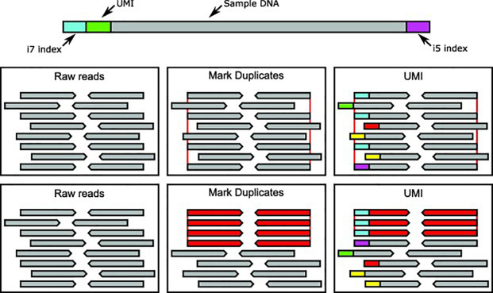
Read Groups: Organizing Your Data
Purpose: Track metadata for groups of reads within BAM files
@RG ID:rg1 LB:lib1 SM:sampleA PL:ILLUMINA PU:flowcell1.lane1
@RG ID:rg2 LB:lib2 SM:sampleA PL:ILLUMINA PU:flowcell1.lane2
read1 456345 chr20 ... RG:Z:rg1
read2 456348 chr20 ... RG:Z:rg2Why read groups matter:
- BQSR models are built per-read-group
- Merging Lanes Allows combining multiple lanes into one patient file (SM)
- Duplicate marking identifies duplicates within same library
- Essential for QC and troubleshooting
- Required for multi-sample variant calling
Best Practice
Add read groups during alignment (bwa mem -R) rather than post-hoc (GATK AddOrReplaceReadGroups), for efficiency.
Somatic Variant Calling Challenges
Germline calling assumes:
- Heterozygous: ~50% VAF (typically 30-70% due to technical variation)
- Homozygous: ~100% VAF
These assumptions fail in tumors:
- Variable tumor purity (30-80%, which is effectively contamination by normal cells)
- Clonal heterogeneity (subclones)
- Copy number alterations
- VAF can be anywhere from <1% to 100%
Additional challenges:
- Sequencing errors, alignment artifacts
- FFPE artifacts
- C>T/G>A deamination
- 8-oxoG which causes the G>T transversions
- Sample contamination
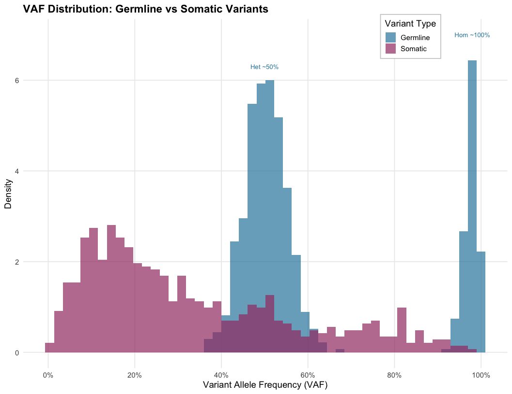
Let’s make an example (assuming diploid genome and CN=2)
1. The Ideal Case
Sample is 100% Tumor
If a mutation is heterozygous (1 of 2 alleles): \[\text{VAF} = \frac{1}{2} = \mathbf{50\%}\]
To a caller, this looks like a clear, standard germline variant.
2. The Real World
Sample is 40% Tumor (60% Normal)
The normal cells (wild type) dilute the signal. \[\text{VAF} = \frac{\text{Purity}}{2}\] \[\text{VAF} = \frac{0.40}{2} = \mathbf{20\%}\]
Tumor Purity, Ploidy, and Clonality
Key concepts:
Tumor purity: Fraction of tumor cells in sample
Ploidy: Average copy number across genome (often >2 in cancer)
Clonal variants: Present in all tumor cells
Subclonal variants: Present in a subset of tumor cells
VAF interpretation examples:
- Pure tumor (100%), clonal het variant → VAF ≈ 50%
- 50% purity, clonal het variant → VAF ≈ 25%
- 50% purity, subclonal variant (20% of cells) → VAF ≈ 5%
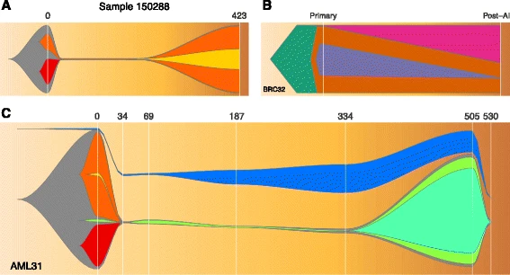
Clinical Relevance
Subclonal variants can become dominant after treatment selection pressure, leading to resistance.
Variant Filtering Strategies
Three key considerations:
1. Sequencing Error
- Base quality scores (Phred: Q30 = 1/1000 error)
- Variant allele frequency
- Strand bias
- Mapping quality (ie MAPQ ≥ 20)
2. Technical Artifacts
- Panel of Normals (PoN): Database of artifacts seen in normal samples
- Systematic errors from library prep or sequencing
- FFPE artifacts
3. Germline Filtering
- Compare with matched normal
- Filter using population databases:
- gnomAD v4.0 (>800K individuals)
- 1000 Genomes Phase 3 (~2,500 individuals)
- Common variants (AF > 0.1%) are typically germline
gnomAD
The Genome Aggregation Database contains variant frequencies essential for filtering common germline variants. Most callers (Mutect2, Strelka2) apply these filters automatically, but understanding the logic helps with troubleshooting false positives.
GATK Mutect2 Workflow
flowchart TD
A[Tumor BAM] --> C[Mutect2]
B[Normal BAM] --> C
D[Panel of Normals] --> C
E[Germline Resource] --> C
A -.-> |optional| F[GetPileupSummaries]
E -.-> F
F -.-> G[CalculateContamination]
G -.-> |if available| H
C --> H[FilterMutectCalls]
H --> I[Filtered VCF]
I --> J[VEP Annotation]
classDef resource fill:#e1f5ff,stroke:#0288d1,stroke-width:2px
classDef process fill:#fff9c4,stroke:#f57f17,stroke-width:2px
class D,E resource
class C,F,G,H,J process
Key features:
- Haplotype-aware variant calling (local assembly)
- Joint analysis of tumor-normal pairs
- Integrated contamination estimation
- F1R2 (Forward 1st, Reverse 2nd) artifact filtering
PoN vs gnomAD
- Germline Resource: Filters biological germline variants (universal)
- PoN: Filters technical artifacts (platform-specific)
Public PoNs exist but work best when your sequencing protocol matches theirs. When in doubt, build your own!
You can find every step’s relative script here
The VCF File Format
Variant Call Format Standard for storing variant data (current: v4.3)
##fileformat=VCFv4.3
##INFO=<ID=DP,Number=1,Type=Integer,Description="Total Depth">
##INFO=<ID=AF,Number=A,Type=Float,Description="Allele Frequency">
##FILTER=<ID=weak_evidence,Description="Insufficient support">
##FILTER=<ID=germline,Description="Likely germline variant">
##FORMAT=<ID=GT,Number=1,Type=String,Description="Genotype">
##FORMAT=<ID=AD,Number=R,Type=Integer,Description="Allelic depths (REF,ALT)">
##FORMAT=<ID=AF,Number=A,Type=Float,Description="Allele Frequency">
#CHROM POS ID REF ALT QUAL FILTER INFO FORMAT TUMOR NORMAL
chr17 7577538 rs123 G A . PASS DP=100 GT:AD:AF 0/1:70,30:0.30 0/0:50,0:0.0
chr17 7578406 . C T . germline DP=85 GT:AD:AF 0/1:40,45:0.53 0/1:30,25:0.45Key columns explained:
- CHROM/POS: Genomic location
- REF/ALT: Reference and alternate alleles
- FILTER: Quality filters applied (PASS = passed all)
- FORMAT: Defines sample-specific fields
- GT: Genotype (0/0=hom ref, 0/1=het, 1/1=hom alt)
- AD: Allele depths (REF count, ALT count)
- AF: Variant Allele Frequency = ALT/(REF+ALT)
Example interpretation:
Row 1: Somatic mutation (30% VAF in tumor, 0% in normal) ✓
Row 2: Germline variant (present in both tumor and normal) ✗
FILTER Field
“PASS” means the variant passed all filters, not that it’s biologically validated. Clinical decisions require orthogonal validation (Sanger, ddPCR, amplicon-seq).
Variant Annotation: The Critical Step
After calling, variants need biological context:
Functional Annotation
- VEP (Ensembl) or SnpEff
- Effect prediction: missense, nonsense, splice site
- Impact assessment: SIFT, PolyPhen, CADD scores
Clinical Databases
- ClinVar: Clinical significance
- COSMIC: Cancer mutation database
- OncoKB, CIViC: Actionability
Population Frequencies
- gnomAD, dbSNP
- Filter common germline variants
Tools
VEP offers extensive plugin ecosystem.
Structural Variation Detection
Types:
- Large insertions/deletions
- Translocations
- Inversions
- Complex rearrangements
Detection methods:
- Discordant read pairs
- Split reads
- Read depth changes
- Assembly-based approaches
Tools: Manta, Tiddit, GRIDSS2, DELLY, Sniffles2 (long reads)
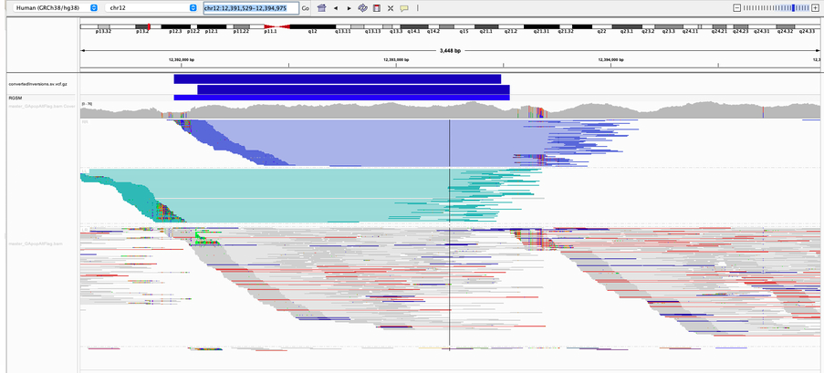
Long Reads Advantage
Long-read sequencing (PacBio HiFi, ONT) dramatically improves structural variant detection, especially for complex rearrangements and insertions.
Copy Number Variation (CNV)
Characteristics:
- Gains or losses of genomic segments
- Full chromosome or arm-level events common
- Can cause Loss of Heterozygosity (LOH)
Detection approach:
- Calculate coverage in bins
- Normalize for GC content and mappability
- Compare tumor vs normal ratio
- Segment and call CNV regions
Tools: CNVkit, ASCAT, Control-FREEC, PURPLE
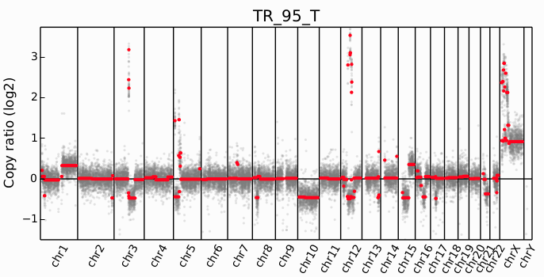
Clinical Example
ERBB2 (HER2) amplification in breast cancer determines eligibility for trastuzumab. MYC amplification is prognostic in many cancers.
Gene Fusions in Cancer
Mechanism:
- Chromosomal translocation
- Fusion of gene elements
- Creates chimeric transcripts
Detection data types:
- WGS (genomic breakpoints)
- WES (if breakpoints in exons)
- RNA-seq (fusion transcripts)
Detection method: Discordant alignments where paired reads map to different genes/chromosomes
Tools: Manta (DNA), STAR-Fusion, Arriba (RNA-seq)
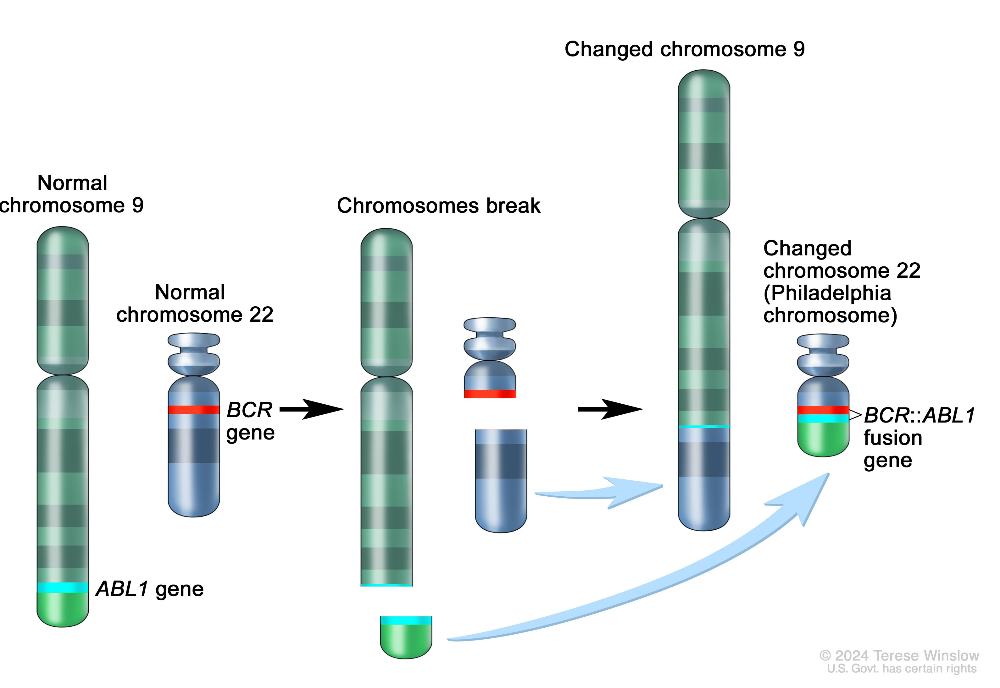
Famous Example
BCR-ABL fusion in CML(Chronic Myeloid Leukemia)
- discovered 1960
- translocation identified 1973
- imatinib approved 2001.
From observation to targeted therapy took 41 years; today we can do this computationally.
Quality Control Metrics
Essential QC checks at each stage:
| Metric | Expected Value | Interpretation |
|---|---|---|
| Mapping rate | >95% | Low = contamination or poor quality |
| Duplicate rate | <30% (WGS) | High = low library complexity |
| Mean coverage | As specified | Low = insufficient data |
| Coverage uniformity | CV <0.2 | High variability = capture issues |
| Contamination | <1-2% | High = sample swap or cross-contamination |
| Ti/Tv ratio | ~2.0-2.1 (WGS), ~3.0-3.3 (exome) | Low = sequencing errors enriched |
| Insert size | 200-400bp (Illumina) | Bimodal = library issues |
| GC bias | Flat across 30-70% GC | Strong bias = PCR or coverage issues |
Tools: fastQC, MultiQC, mosdepth, GATK CollectHsMetrics
Common Pitfall
Always check for cross-sample contamination - rampant in shared facilities and has caused retractions!
Summary and Key Takeaways
Cancer Genomics Fundamentals:
- Cancer is driven by genomic alterations
- Both small variants and structural changes
- Somatic vs germline distinction critical
- ~5-10% hereditary predisposition
Technical Considerations:
- Tumor-normal paired design
- Appropriate sequencing strategy
- Quality preprocessing essential
- Purity >30% recommended
Variant Calling:
- Haplotype-aware methods (Mutect2)
- Multiple filtering strategies
- Standard file formats (BAM, VCF)
- Annotation is essential!
Clinical Applications:
- Mutational signatures reveal etiology
- TMB predicts immunotherapy response
- Fusions guide targeted therapy
- CNV determines treatment options
References and Resources
Key Papers:
- Hanahan & Weinberg (2011) Cell - Hallmarks of Cancer
- Vogelstein et al. (2013) Science - Cancer Genome Landscapes
- Alexandrov et al. (2020) Nature - Mutational Signatures
- Cibulskis et al. (2013) Nature Biotech - MuTect
- Karczewski et al. (2020) Nature - gnomAD
Databases:
- COSMIC (cancer.sanger.ac.uk) - Somatic mutations
- gnomAD (gnomad.broadinstitute.org) - Population frequencies
- ClinVar - Clinical interpretations
- OncoKB - Precision oncology knowledge
Tools & Pipelines:
- GATK (gatk.broadinstitute.org)
- nf-core/sarek - Production pipeline
- IGV (igv.org) - Visualization
Exercises

Giphy

Cancer Variant Analysis - SIB